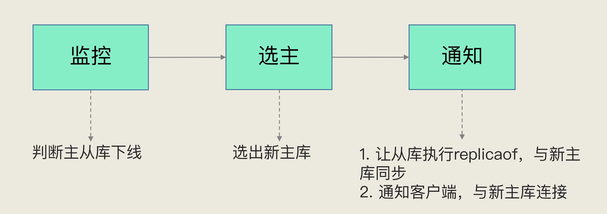

- 00 开篇词 这样学Redis，才能技高一筹.md.html
- 01 基本架构：一个键值数据库包含什么？.md.html
- 02 数据结构：快速的Redis有哪些慢操作？.md.html
- 03 高性能IO模型：为什么单线程Redis能那么快？.md.html
- 04 AOF日志：宕机了，Redis如何避免数据丢失？.md.html
- 05 内存快照：宕机后，Redis如何实现快速恢复？.md.html
- 06 数据同步：主从库如何实现数据一致？.md.html
- 07 哨兵机制：主库挂了，如何不间断服务？.md.html
- 08 哨兵集群：哨兵挂了，主从库还能切换吗？.md.html
- 09 切片集群：数据增多了，是该加内存还是加实例？.md.html
- 10 第1～9讲课后思考题答案及常见问题答疑.md.html
- 11 “万金油”的String，为什么不好用了？.md.html
- 12 有一亿个keys要统计，应该用哪种集合？.md.html
- 13 GEO是什么？还可以定义新的数据类型吗？.md.html
- 14 如何在Redis中保存时间序列数据？.md.html
- 15 消息队列的考验：Redis有哪些解决方案？.md.html
- 16 异步机制：如何避免单线程模型的阻塞？.md.html
- 17 为什么CPU结构也会影响Redis的性能？.md.html
- 18 波动的响应延迟：如何应对变慢的Redis？（上）.md.html
- 19 波动的响应延迟：如何应对变慢的Redis？（下）.md.html
- 20 删除数据后，为什么内存占用率还是很高？.md.html
- 21 缓冲区：一个可能引发“惨案”的地方.md.html
- 22 第11～21讲课后思考题答案及常见问题答疑.md.html
- 23 旁路缓存：Redis是如何工作的？.md.html
- 24 替换策略：缓存满了怎么办？.md.html
- 25 缓存异常（上）：如何解决缓存和数据库的数据不一致问题？.md.html
- 26 缓存异常（下）：如何解决缓存雪崩、击穿、穿透难题？.md.html
- 27 缓存被污染了，该怎么办？.md.html
- 28 Pika：如何基于SSD实现大容量Redis？.md.html
- 29 无锁的原子操作：Redis如何应对并发访问？.md.html
- 30 如何使用Redis实现分布式锁？.md.html
- 31 事务机制：Redis能实现ACID属性吗？.md.html
- 32 Redis主从同步与故障切换，有哪些坑？.md.html
- 33 脑裂：一次奇怪的数据丢失.md.html
- 34 第23~33讲课后思考题答案及常见问题答疑.md.html
- 35 Codis VS Redis Cluster：我该选择哪一个集群方案？.md.html
- 36 Redis支撑秒杀场景的关键技术和实践都有哪些？.md.html
- 37 数据分布优化：如何应对数据倾斜？.md.html
- 38 通信开销：限制Redis Cluster规模的关键因素.md.html
- 39 Redis 6.0的新特性：多线程、客户端缓存与安全.md.html
- 40 Redis的下一步：基于NVM内存的实践.md.html
- 41 第35～40讲课后思考题答案及常见问题答疑.md.html
- 加餐 01 经典的Redis学习资料有哪些？.md.html
- 加餐 02 用户Kaito：我是如何学习Redis的？.md.html
- 加餐 03 用户Kaito：我希望成为在压力中成长的人.md.html
- 加餐 04 Redis客户端如何与服务器端交换命令和数据？.md.html
- 加餐 05 Redis有哪些好用的运维工具？.md.html
- 加餐 06 Redis的使用规范小建议.md.html
- 加餐 07 从微博的Redis实践中，我们可以学到哪些经验？.md.html
- 结束语 从学习Redis到向Redis学习.md.html
- 捐赠
07 哨兵机制：主库挂了，如何不间断服务？
上节课，我们学习了主从库集群模式。在这个模式下，如果从库发生故障了，客户端可以继续向主库或其他从库发送请求，进行相关的操作，但是如果主库发生故障了，那就直接会影响到从库的同步，因为从库没有相应的主库可以进行数据复制操作了。
而且，如果客户端发送的都是读操作请求，那还可以由从库继续提供服务，这在纯读的业务场景下还能被接受。但是，一旦有写操作请求了，按照主从库模式下的读写分离要求，需要由主库来完成写操作。此时，也没有实例可以来服务客户端的写操作请求了，如下图所示：
主库故障后从库无法服务写操作
无论是写服务中断，还是从库无法进行数据同步，都是不能接受的。所以，如果主库挂了，我们就需要运行一个新主库，比如说把一个从库切换为主库，把它当成主库。这就涉及到三个问题：
- 主库真的挂了吗？
- 该选择哪个从库作为主库？
- 怎么把新主库的相关信息通知给从库和客户端呢？
这就要提到哨兵机制了。在 Redis 主从集群中，哨兵机制是实现主从库自动切换的关键机制，它有效地解决了主从复制模式下故障转移的这三个问题。
接下来，我们就一起学习下哨兵机制。
哨兵机制的基本流程
哨兵其实就是一个运行在特殊模式下的 Redis 进程，主从库实例运行的同时，它也在运行。哨兵主要负责的就是三个任务：监控、选主（选择主库）和通知。
我们先看监控。监控是指哨兵进程在运行时，周期性地给所有的主从库发送 PING 命令，检测它们是否仍然在线运行。如果从库没有在规定时间内响应哨兵的 PING 命令，哨兵就会把它标记为“下线状态”；同样，如果主库也没有在规定时间内响应哨兵的 PING 命令，哨兵就会判定主库下线，然后开始自动切换主库的流程。
这个流程首先是执行哨兵的第二个任务，选主。主库挂了以后，哨兵就需要从很多个从库里，按照一定的规则选择一个从库实例，把它作为新的主库。这一步完成后，现在的集群里就有了新主库。
然后，哨兵会执行最后一个任务：通知。在执行通知任务时，哨兵会把新主库的连接信息发给其他从库，让它们执行 replicaof 命令，和新主库建立连接，并进行数据复制。同时，哨兵会把新主库的连接信息通知给客户端，让它们把请求操作发到新主库上。
我画了一张图片，展示了这三个任务以及它们各自的目标。

哨兵机制的三项任务与目标
在这三个任务中，通知任务相对来说比较简单，哨兵只需要把新主库信息发给从库和客户端，让它们和新主库建立连接就行，并不涉及决策的逻辑。但是，在监控和选主这两个任务中，哨兵需要做出两个决策：
- 在监控任务中，哨兵需要判断主库是否处于下线状态；
- 在选主任务中，哨兵也要决定选择哪个从库实例作为主库。
接下来，我们就先说说如何判断主库的下线状态。
你首先要知道的是，哨兵对主库的下线判断有“主观下线”和“客观下线”两种。那么，为什么会存在两种判断呢？它们的区别和联系是什么呢？
主观下线和客观下线
我先解释下什么是“主观下线”。
哨兵进程会使用 PING 命令检测它自己和主、从库的网络连接情况，用来判断实例的状态。如果哨兵发现主库或从库对 PING 命令的响应超时了，那么，哨兵就会先把它标记为“主观下线”。
如果检测的是从库，那么，哨兵简单地把它标记为“主观下线”就行了，因为从库的下线影响一般不太大，集群的对外服务不会间断。
但是，如果检测的是主库，那么，哨兵还不能简单地把它标记为“主观下线”，开启主从切换。因为很有可能存在这么一个情况：那就是哨兵误判了，其实主库并没有故障。可是，一旦启动了主从切换，后续的选主和通知操作都会带来额外的计算和通信开销。
为了避免这些不必要的开销，我们要特别注意误判的情况。
首先，我们要知道啥叫误判。很简单，就是主库实际并没有下线，但是哨兵误以为它下线了。误判一般会发生在集群网络压力较大、网络拥塞，或者是主库本身压力较大的情况下。
一旦哨兵判断主库下线了，就会开始选择新主库，并让从库和新主库进行数据同步，这个过程本身就会有开销，例如，哨兵要花时间选出新主库，从库也需要花时间和新主库同步。而在误判的情况下，主库本身根本就不需要进行切换的，所以这个过程的开销是没有价值的。正因为这样，我们需要判断是否有误判，以及减少误判。
那怎么减少误判呢？在日常生活中，当我们要对一些重要的事情做判断的时候，经常会和家人或朋友一起商量一下，然后再做决定。
哨兵机制也是类似的，它通常会采用多实例组成的集群模式进行部署，这也被称为哨兵集群。引入多个哨兵实例一起来判断，就可以避免单个哨兵因为自身网络状况不好，而误判主库下线的情况。同时，多个哨兵的网络同时不稳定的概率较小，由它们一起做决策，误判率也能降低。
这节课，你只需要先理解哨兵集群在减少误判方面的作用，就行了。至于具体的运行机制，下节课我们再重点学习。
在判断主库是否下线时，不能由一个哨兵说了算，只有大多数的哨兵实例，都判断主库已经“主观下线”了，主库才会被标记为“客观下线”，这个叫法也是表明主库下线成为一个客观事实了。这个判断原则就是：少数服从多数。同时，这会进一步触发哨兵开始主从切换流程。
为了方便你理解，我再画一张图展示一下这里的逻辑。
如下图所示，Redis 主从集群有一个主库、三个从库，还有三个哨兵实例。在图片的左边，哨兵 2 判断主库为“主观下线”，但哨兵 1 和 3 却判定主库是上线状态，此时，主库仍然被判断为处于上线状态。在图片的右边，哨兵 1 和 2 都判断主库为“主观下线”，此时，即使哨兵 3 仍然判断主库为上线状态，主库也被标记为“客观下线”了。

客观下线的判断
简单来说，“客观下线”的标准就是，当有 N 个哨兵实例时，最好要有 N/2 + 1 个实例判断主库为“主观下线”，才能最终判定主库为“客观下线”。这样一来，就可以减少误判的概率，也能避免误判带来的无谓的主从库切换。（当然，有多少个实例做出“主观下线”的判断才可以，可以由 Redis 管理员自行设定）。
好了，到这里，你可以看到，借助于多个哨兵实例的共同判断机制，我们就可以更准确地判断出主库是否处于下线状态。如果主库的确下线了，哨兵就要开始下一个决策过程了，即从许多从库中，选出一个从库来做新主库。
如何选定新主库？
一般来说，我把哨兵选择新主库的过程称为“筛选 + 打分”。简单来说，我们在多个从库中，先按照一定的筛选条件，把不符合条件的从库去掉。然后，我们再按照一定的规则，给剩下的从库逐个打分，将得分最高的从库选为新主库，如下图所示：

新主库的选择过程
在刚刚的这段话里，需要注意的是两个“一定”，现在，我们要考虑这里的“一定”具体是指什么。
首先来看筛选的条件。
一般情况下，我们肯定要先保证所选的从库仍然在线运行。不过，在选主时从库正常在线，这只能表示从库的现状良好，并不代表它就是最适合做主库的。
设想一下，如果在选主时，一个从库正常运行，我们把它选为新主库开始使用了。可是，很快它的网络出了故障，此时，我们就得重新选主了。这显然不是我们期望的结果。
所以，在选主时，除了要检查从库的当前在线状态，还要判断它之前的网络连接状态。如果从库总是和主库断连，而且断连次数超出了一定的阈值，我们就有理由相信，这个从库的网络状况并不是太好，就可以把这个从库筛掉了。
具体怎么判断呢？你使用配置项 down-after-milliseconds * 10。其中，down-after-milliseconds 是我们认定主从库断连的最大连接超时时间。如果在 down-after-milliseconds 毫秒内，主从节点都没有通过网络联系上，我们就可以认为主从节点断连了。如果发生断连的次数超过了 10 次，就说明这个从库的网络状况不好，不适合作为新主库。
好了，这样我们就过滤掉了不适合做主库的从库，完成了筛选工作。
接下来就要给剩余的从库打分了。我们可以分别按照三个规则依次进行三轮打分，这三个规则分别是从库优先级、从库复制进度以及从库 ID 号。只要在某一轮中，有从库得分最高，那么它就是主库了，选主过程到此结束。如果没有出现得分最高的从库，那么就继续进行下一轮。
第一轮：优先级最高的从库得分高。
用户可以通过 slave-priority 配置项，给不同的从库设置不同优先级。比如，你有两个从库，它们的内存大小不一样，你可以手动给内存大的实例设置一个高优先级。在选主时，哨兵会给优先级高的从库打高分，如果有一个从库优先级最高，那么它就是新主库了。如果从库的优先级都一样，那么哨兵开始第二轮打分。
第二轮：和旧主库同步程度最接近的从库得分高。
这个规则的依据是，如果选择和旧主库同步最接近的那个从库作为主库，那么，这个新主库上就有最新的数据。
如何判断从库和旧主库间的同步进度呢？
上节课我向你介绍过，主从库同步时有个命令传播的过程。在这个过程中，主库会用 master_repl_offset 记录当前的最新写操作在 repl_backlog_buffer 中的位置，而从库会用 slave_repl_offset 这个值记录当前的复制进度。
此时，我们想要找的从库，它的 slave_repl_offset 需要最接近 master_repl_offset。如果在所有从库中，有从库的 slave_repl_offset 最接近 master_repl_offset，那么它的得分就最高，可以作为新主库。
就像下图所示，旧主库的 master_repl_offset 是 1000，从库 1、2 和 3 的 slave_repl_offset 分别是 950、990 和 900，那么，从库 2 就应该被选为新主库。

基于复制进度的新主库选主原则
当然，如果有两个从库的 slave_repl_offset 值大小是一样的（例如，从库 1 和从库 2 的 slave_repl_offset 值都是 990），我们就需要给它们进行第三轮打分了。
第三轮：ID 号小的从库得分高。
每个实例都会有一个 ID，这个 ID 就类似于这里的从库的编号。目前，Redis 在选主库时，有一个默认的规定：在优先级和复制进度都相同的情况下，ID 号最小的从库得分最高，会被选为新主库。
到这里，新主库就被选出来了，“选主”这个过程就完成了。
我们再回顾下这个流程。首先，哨兵会按照在线状态、网络状态，筛选过滤掉一部分不符合要求的从库，然后，依次按照优先级、复制进度、ID 号大小再对剩余的从库进行打分，只要有得分最高的从库出现，就把它选为新主库。
小结
这节课，我们一起学习了哨兵机制，它是实现 Redis 不间断服务的重要保证。具体来说，主从集群的数据同步，是数据可靠的基础保证；而在主库发生故障时，自动的主从切换是服务不间断的关键支撑。
Redis 的哨兵机制自动完成了以下三大功能，从而实现了主从库的自动切换，可以降低 Redis 集群的运维开销：
- 监控主库运行状态，并判断主库是否客观下线；
- 在主库客观下线后，选取新主库；
- 选出新主库后，通知从库和客户端。
为了降低误判率，在实际应用时，哨兵机制通常采用多实例的方式进行部署，多个哨兵实例通过“少数服从多数”的原则，来判断主库是否客观下线。一般来说，我们可以部署三个哨兵，如果有两个哨兵认定主库“主观下线”，就可以开始切换过程。当然，如果你希望进一步提升判断准确率，也可以再适当增加哨兵个数，比如说使用五个哨兵。
但是，使用多个哨兵实例来降低误判率，其实相当于组成了一个哨兵集群，我们会因此面临着一些新的挑战，例如：
- 哨兵集群中有实例挂了，怎么办，会影响主库状态判断和选主吗？
- 哨兵集群多数实例达成共识，判断出主库“客观下线”后，由哪个实例来执行主从切换呢？
要搞懂这些问题，就不得不提哨兵集群了，下节课，我们来具体聊聊哨兵集群的机制和问题。
每课一问
按照惯例，我给你提个小问题。这节课，我提到，通过哨兵机制，可以实现主从库的自动切换，这是实现服务不间断的关键支撑，同时，我也提到了主从库切换是需要一定时间的。所以，请你考虑下，在这个切换过程中，客户端能否正常地进行请求操作呢？如果想要应用程序不感知服务的中断，还需要哨兵或需要客户端再做些什么吗？
欢迎你在留言区跟我交流讨论，也欢迎你能帮我把今天的内容分享给更多人，帮助他们一起解决问题。我们下节课见。
© 2019 - 2023 Liangliang Lee. Powered by gin and hexo-theme-book.